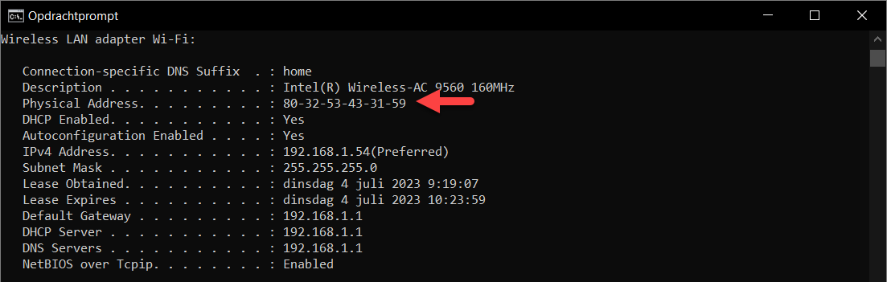

Zoals je al kon afleiden uit de Ethernet header van een Frame telt een MAC adres 6 bytes ofwel 48 bits. Omdat het nogal onhandig is om dit adres binair uit te schrijven wordt gekozen voor een kortere, hexadecimale, notatie.
MAC staat voor medium access control, de sublaag die regelt wie het gedeelde transmissiemedium mag gebruiken. Je komt ook media access control tegen, en dat is de vorm die de meeste fabrikanten schrijven; IEEE 802, dat de standaard opstelt, houdt het op medium.
Een MAC adres ziet er bijvoorbeeld zo uit: 80-32-53-43-31-59.
Je kan je MAC adres op je Windows computer te weten komen door het uitvoeren van het commando ipconfig /all. Iedere netwerkkaart heeft zijn eigen MAC adres.

Het is de fabrikant van de netwerkkaart die het MAC adres kiest. Bij het produceren van de kaart wordt het MAC adres vast ingesteld en dit zal, onder normale omstandigheden, nooit meer veranderen.
Een MAC adres bestaat uit twee delen:
De eerste 3 bytes (OUI) identificeren de fabrikant van de netwerkkaart. Heb je bijvoorbeeld een netwerkkaart van Intel dan zijn de eerste drie bytes 80-32-53.
De laatste drie bytes (NIC) identificeren de netwerkkaart zelf. Het is belangrijk om in te zien dat dit een willekeurig getal is en niets te maken heeft met het type of model van de netwerkkaart. Een MAC adres moet uniek zijn op het netwerk voor een juiste adressering.
In een MAC adres zit dus geen echte structuur die iets zou kunnen verklappen over de fysieke locatie van de netwerkinterface in het netwerk. We noemen dit ook wel flat adressing. Een MAC adres wordt gebruikt om een computer te adresseren binnen het lokale netwerk (LAN).
Op een andere laag van het TCP/IP model, de netwerklaag, vinden we ook nog IP adressering terug. Dit type adres ziet er bijvoorbeeld zo uit: 84.12.129.253. In tegenstelling tot een MAC adres zit er in dit type adres wel een bepaalde structuur die ervoor kan zorgen dat computers buiten het lokale netwerk kunnen worden geadresseerd. Hierover later meer.